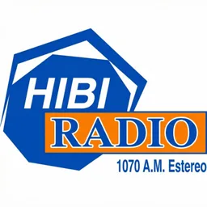
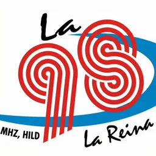
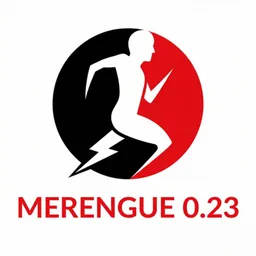

Hub · Ciudad
Radios en San Pedro de Macorís
16 emisoras en vivo en VivoRD
En San Pedro de Macorís, la radio acompaña la vida portuaria, la caña y el béisbol como en pocas ciudades del Caribe. El dial local mezcla estaciones con raíces comunitarias, formatos tropicales y voces que conocen de cerca la historia industrial de la provincia. Escuchar San Pedro en línea es acercarse a un ritmo distinto al de la capital, más cercano al litoral sur-oriental.
Las emisoras de la ciudad suelen programar música bailable, espacios de participación y boletines que conectan barrios con la noticia provincial. En temporada de pelota, muchas frecuencias amplifican la pasión por los Toros del Este y el debate deportivo que cruza fronteras con La Romana y Santo Domingo. La oferta no es tan numerosa como en el Gran Santo Domingo, pero sí densa en identidad.
VivoRD reúne aquí las emisoras de San Pedro de Macorís que están activas en nuestro directorio y pasan el filtro de salud de stream. Cada enlace abre una ficha con reproductor integrado y metadatos verificables. Si una emisora no aparece, puede estar catalogada bajo otra ciudad o temporalmente sin señal online.
Usa este hub como punto de partida para descubrir el sonido del sur profundo. Las guías relacionadas explican cómo escuchar radio dominicana desde el extranjero y recomiendan emisoras por género cuando buscas algo concreto más allá de la geografía.
Emisoras




